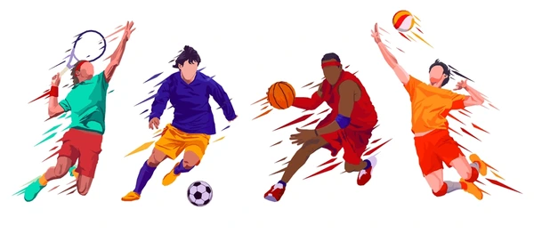

Las mejores recomendaciones
En este sitio encontrarás recomendaciones y consejos sobre los deportes más populares: basquetbol, futbol, voleibol y tenis.
- Beneficios físicos y mentales
- Consejos para principiantes
- Equipamiento recomendado
"El deporte no construye el carácter. Lo revela." - Heywood Broun
El deporte es una herramienta poderosa para la salud y la integración social.